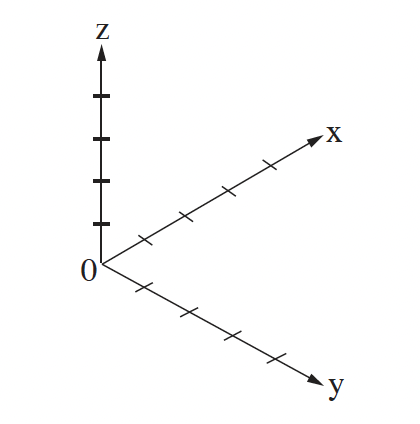
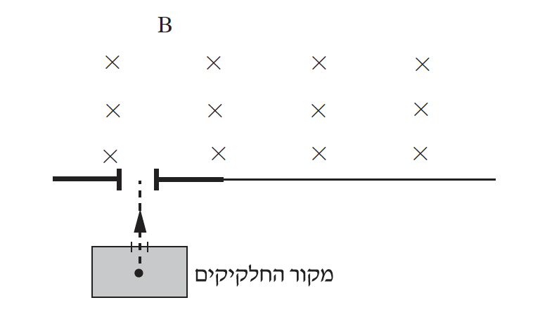

שאלה 5
בסדרת ניסויים חקרו את התנהגותם של חלקיקים טעונים באזור שבו הופעלו שדה מגנטי ושדה חשמלי. מטענו של כל חלקיק הוא +q ומסתו היא m. (הזניחו את השפעתו של כוח הכבידה).
בשלב הראשון, הפעילו באזור רק שדה מגנטי B, בכיוון החיובי של ציר ה-x. את החלקיקים הטעונים הכניסו אל תוך השדה המגנטי במהירות שגודלה v. נמצא שהחלקיקים המשיכו לנוע בקו ישר.
החלקיקים נעו במקביל לאחד הצירים x, y, z המוצגים במערכת הצירים שבתרשים א.
קבעו במקביל לאיזה ציר נעו החלקיקים. נמקו את קביעתכם. (6 נקודות)

בשלב השני נוסף על השדה המגנטי B הפעילו גם שדה חשמלי E, בכיוון החיובי של ציר ה-y.
שחררו את החלקיקים ממנוחה באזור הניסוי. קבעו אם החלקיקים נשארו במנוחה, נעו בקו ישר או נעו בקו עקום. נמקו. (6 נקודות)
בניסוי נוסף, באזור שבו פעלו שני השדות, החלקיקים נעו במקביל לציר ה-z, ולאחר מכן הם עברו לאזור אחר שבו פעל רק השדה המגנטי (ראה תרשים ב).

החלקיקים ינועו בקו ישר באזור שבו פועלים שני השדות רק כאשר מתקיים קשר מסוים בין העוצמות של שני השדות לבין גודל מהירות החלקיקים. התבססו על עקרונות פיזיקליים ומצאו קשר זה. פרטו את שיקוליכם. (9 נקודות)
תארו במילים את מסלול החלקיקים באזור שבו פעל רק השדה המגנטי. (4 נקודות)
השתמשו בפרמטרים: m, q, E, B, ופתחו נוסחה המראה כי המערכת המתוארת בתרשים ב יכולה לשמש להפרדת איזוטופים של יסוד כלשהו. (8 1/3 נקודות)